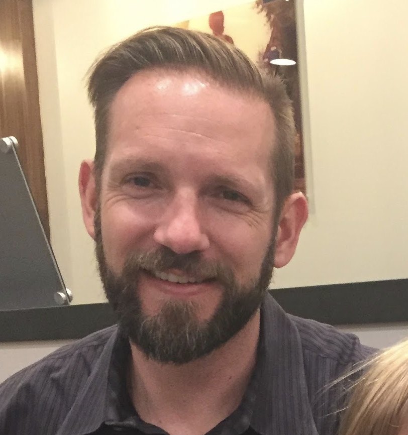

About Me
I have a background as a management consultant with Celerant Consulting. During my time there, 4+ years, I was on-site at Bayer Biologics (Berkeley, CA), Wyeth Pharmaceuticals (Pearl River, NY and Sanford, NC), Roche Pharmaceuticals (Nutley, NJ), and Diosynth Biotechnology (Morrisville, NC). During these engagements I participated in and led projects to minimize lead time for Quality processes, improve capacity utilization in manufacturing, and optimize QC processes. The primary focus of these activities was to apply lean six sigma solutions to non-manufacturing environments. This effort centered on creating balanced score cards throughout the organization. Additionally, we identified and standardized core business processes.
Following consulting, I was employed at Diosynth Biotechnology. During this time I transitioned between executing continuous improvement projects, installing management systems, and managing relationships with our customers. I managed the process transfer of test methods for three investigational molecules. This process included close cooperation with multiple internal teams as well as the sponsoring company as the investigational molecule progressed through development phases. I led the team which created management processes and tools to manage the release of batches. The net effect of this system was to reduce average lead time from fermentation to API release by approx 60%. This effort was largely driven by standardization of release processes and requirements. The team which I managed was responsible for the design and installation of TrackWise at Diosynth.
At Novo Nordisk I began my career as a Lean Coach for Quality. While in this role I led the effort to establish a system for managing the deviation and batch release processes. Additionally, I designed and installed the daily and monthly reporting processes for Quality. The end result of these systems has been our site becoming the most reliable performer within Novo Nordisk with respect to release times.
Connect with me